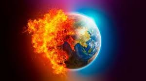
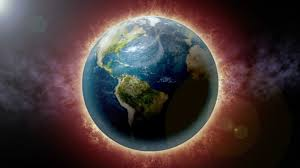

Climate change refers to ling-term shifts in temperatures and weather patterns. Such shifts can be natural, due to changes in the sun's activity or large volcanic eruptions But since 1800s, human activities have been the main driver of climate change, primarily due to the burning of fossil fuels like coal, oil and gas. Burning fossil fuels generates greenhouse gas emissions that act like a blanket wrapped around the Earth, trapping the sun's heat and raising temperatures. The main greenhouse gases that are causing climate change include carbon dioxide and methane. These come from using gasoline for driving a car or coal for heating a building, for example. Clearing land and cutting down forests can also release carbon dioxide. Agriculture, oil and gas operations are major sources of methane emissions. Energy, industry, transport, buildings, agriculture and land use are among the main sectors causing greenhouse gases.

Climate scientists hae shoed that humans are responsible for virtually all global heating over the last 200 years. Human activities like the ones mentioned above are causing greenhouse gases that are warming the world faster than at any time in at least the last two thousand years. Many people think climate change mainly means warmer temperatures. But temperature rise is only the beginning of the story. Because the Earth is a system, where everything is connected, changes in one area can influence changes in all others. The consequences of climate change now include, among others, intense droughts, water scarcity, severe fires, rising sea levels, flooding, melting polar ice, catastrophic storms and declining biodiversity.
Climate change can affect our health, ability to grow food, housing, safety and work. Some of us are already more vulnerable to climate impacts, such as people living in small island nations and other developing countries. Conditions like sea-level rise and saltwater intrusion have advanced to the point where whole communities have had to relocate, and protracted droughts are putting people at risk of famine. In the future, the number of “climate refugees” is expected to rise.
| Year | Average Temperature | Difference from 2022 |
|---|---|---|
| 1800s | 13.73°C | 11.26°C |
| 1900s | 13.76°C | 11.23°C |
| 1920s | 13.83°C | 11.16°C |
| 1940s | 14.04°C | 10.95°C |
| 1960s | 14.99°C | 10°C |
| 1980s | 15.18°C | 9.81°C |
| 2000s | 15.81°C | 9.18°C |
| 2022 | 24.99°C | 0°C |